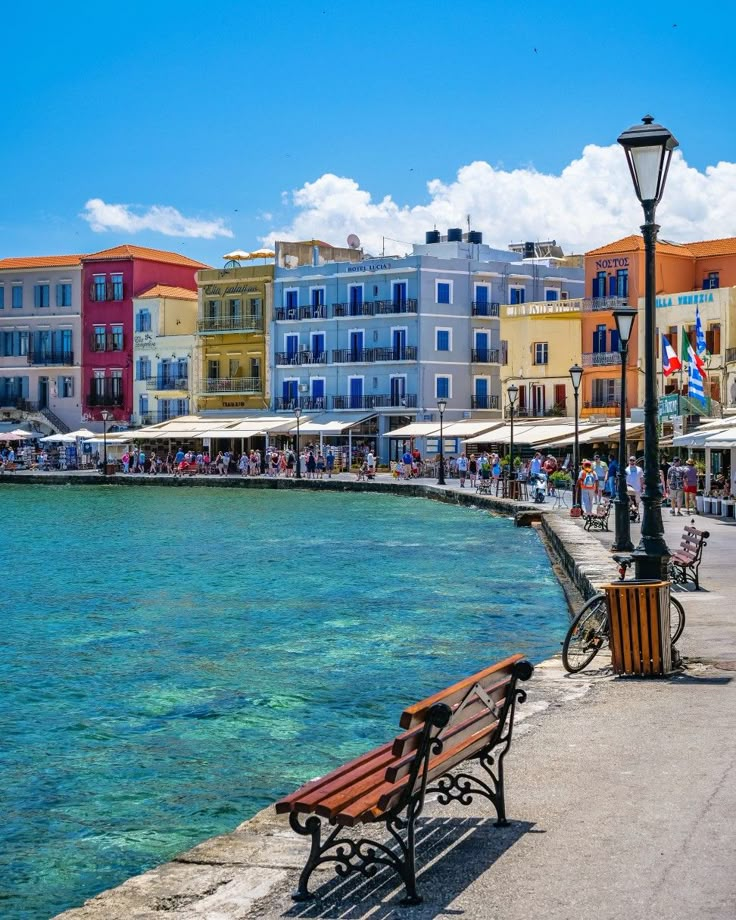

Creta
La isla más grande y diversa. Ideal para quienes buscan una mezcla perfecta de mitología (el Palacio de Cnosos), gargantas naturales y playas salvajes.
Volver
La isla más grande y diversa. Ideal para quienes buscan una mezcla perfecta de mitología (el Palacio de Cnosos), gargantas naturales y playas salvajes.
Volver